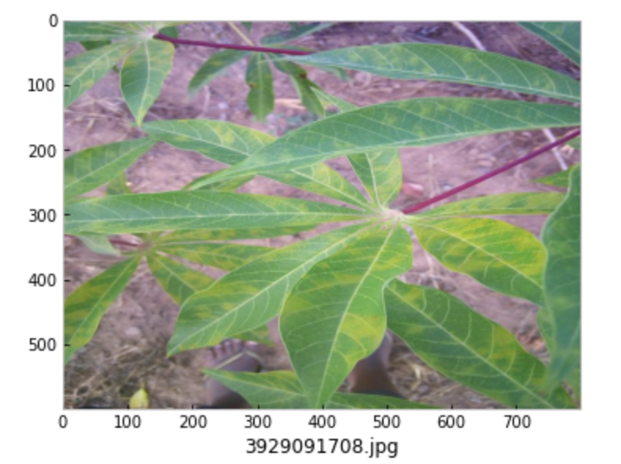
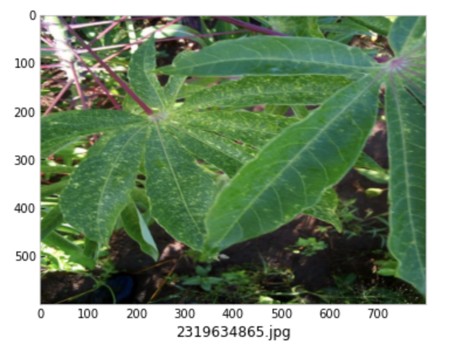
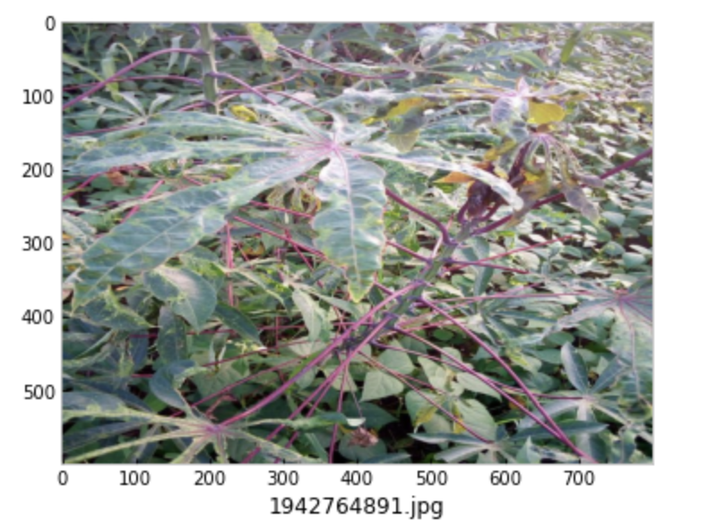
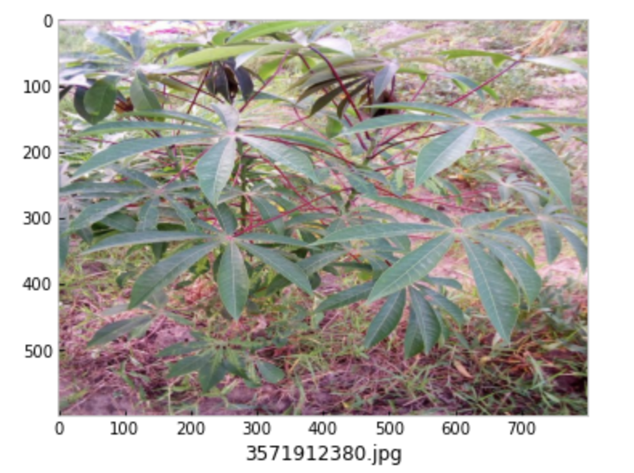
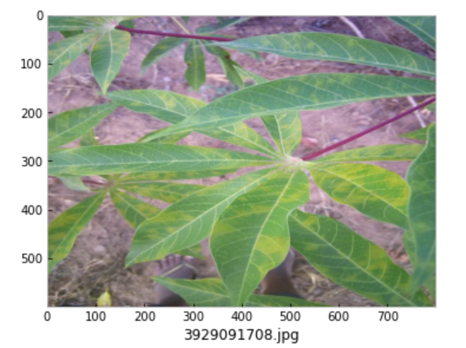
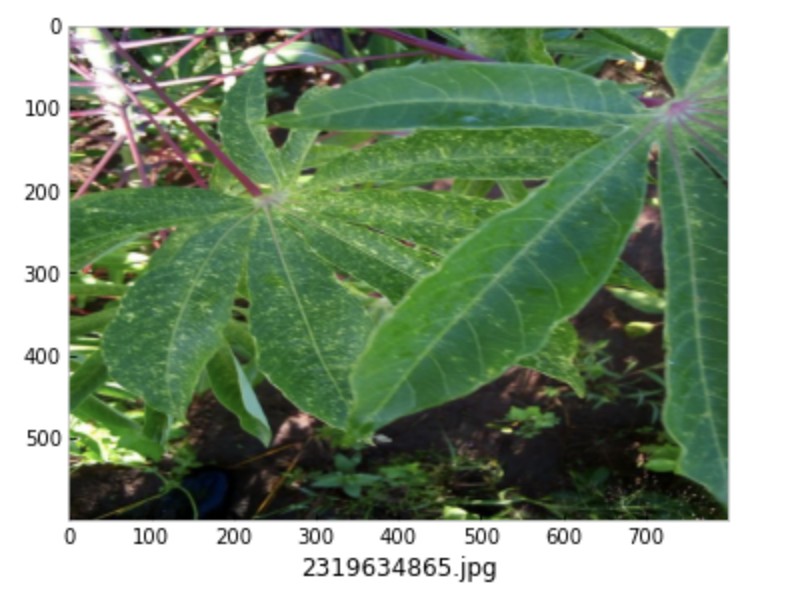
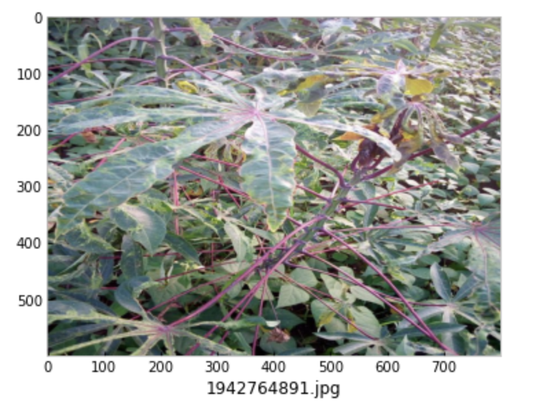
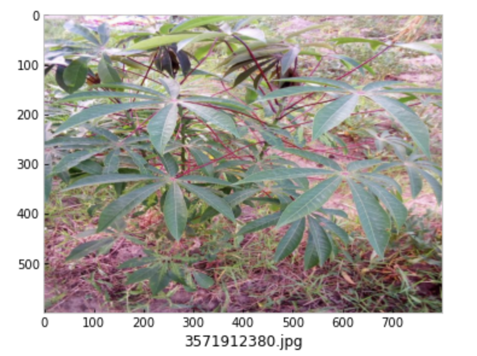
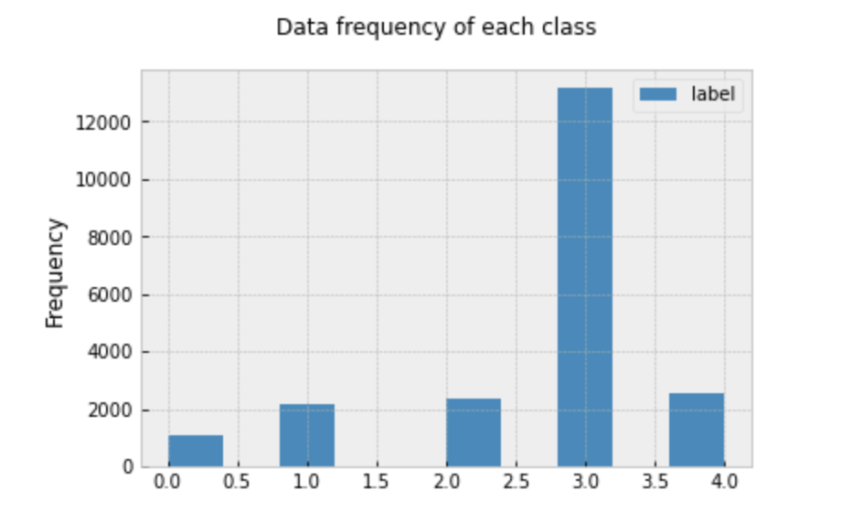

Introduction
Cassava is one of the largest providers of carbohydrates in Africa, due to its nutritional value and its ability to withstand harsh conditions. However, the crop is not immune to a variety of viral diseases which are the cause of a low crop yield for the 80 percent of sub-Saharan household farms that grow Cassava. Existing methods of detecting viral diseases rely on a small group of experts manually examining each plant to identify the type of disease. This is a very inefficient solution to this problem but works because most viral diseases have clear visually detectable symptoms. Because of this nature, solutions to this problem based on using image data are very well studied as shown in this survey.
A competition was hosted on Kaggle to come up with techniques to classify Cassava diseases using pictures of the plants. Though we weren’t able to participate in the live version, my group decided this would be a fun problem to tackle as the final project for our machine learning class.
    
   
Since farmers primarily only have access to mobile devices, we wanted to create a model that was lightweight but still accurate enough to classify photos taken with close to 90% accuracy. To accomplish this, we used convolutional neural networks created through transfer learning of the MobileNetV2 neural network.
Data
We were provided with a training dataset of 21,397 images each with a 600x800 resolution. Each image is labeled with the corresponding diseases category: Cassava Bacterial Blight (0), Cassava Brown Streak Disease (1), Cassava Green Mottle (2), Cassava Mosaic Disease (3), and Healthy (4). The frequency distribution for each class can be seen in the following plot.

It’s clear that there is an overrepresentation of images representing the Cassava Mosaic Diseases. If this skewed-ness is not dealt with, this can lead to models that are biased towards selecting items with label 3. Since the true distribution of each disease is unknown, we would like to avoid this kind of bias, and assume that in reality each disease is seen about the same number of times.
Techniques
Convolutional Neural Networks and Transfer Learning
After outperforming all other known models in the 2012 ImageNet Large-Scale Visual Recognition Challenge, deep convolutional neural networks have been seen as a very successful tool in tackling image classification problems. Though powerful, a challenge with CNNs is that they require a huge training dataset and extensive computing power. There are many great resources on CNNs on the web, so I will spare the technical details in this post.
To get around this problem, transfer learning has been proposed as a way to take advantage of the quality of CNN models, while not requiring as much resources for training. In transfer learning, a CNN is first pre-trained on a different, much larger data set and later fine-tuned on the data set corresponding to the problem of interest. The transferability of such networks has been an active area of research, and we decided to try it out for this project ourselves.
Since one of our goals was a lightweight model, we chose MobileNetV2 as our CNN to transfer from. MobileNetV2 is a model developed by a group from Google, that is optimized for mobile devices.
Data Augmentation and Class-Balanced Cross-Entropy Loss
With an architecture in place, we are on a great start, but there is another problem that we are aware of prior to starting the training process. One, we would like to have more training data, and second, the data is heavily skewed towards a single class.
To solve the first problem, we use a popular technique in image classification called data augmentation, where we artificially create extra training data by randomly applying a combination of rotations, flips, and scaling operations on the existing data.
To solve the second problem, we used the class-balanced cross-entropy loss function that introduces a weighting factor that is inversely proportional to the effective number of samples. The equation to select the effective number of samples is \(E_{n_i} = (1 - \beta)^{n_i} / (1 - \beta)\) where \(n_i\) is the number of samples in class \(i\) and \(\beta\) is 0.9999.
Experiments
We decided to use an 80/20 split training/validation split and the validation accuracy to guide the model selection process. We performed a stratified split so that the training and validation data have roughly the same distribution. All of our experiments used a MobileNetV2 feature extractor pre-trained on the ImageNet data set which served as the”backbone” of the model. The classifier or “head” of the model was a dense layer of 5 nodes connected to the feature extractor which, after applying a softmax operation, would output the probability that the input image belonged to each class. For the loss function, we decided to use cross-entropy loss. In order to make comparisons between models consistent, we decided to use the same optimizer and hyperparameters for every model.
We determined that the best combination of augmentations to use were horizontal flips, vertical flips, brightness contrast, and transpose. The following table summarizes the validation accuracy we were able to acquire using different combinations of augmentations and the cross-entropy loss.
| Models | Validation Accuracy (%) |
|---|---|
| Baseline (trained only classifier) | 76.2 |
| Baseline (trained entire model) | 84.4 |
| Baseline + Augmentations | 85.8 |
| Baseline + Balanced CE | 84.0 |
| Baseline + Balanced CE + Augmentations | 85.0 |
The slight decrease in performance using the class-balanced loss function might be because the validation data has the same distribution as the training data so trying to balance the loss function is counter-productive, however, it may still be beneficial for the test data since that might have a different class distribution.
Finally, we tested the performance of our model using test time augmentation and the results are summarized in the following table:
| Models | Test Accuracy (%) | |
|---|---|---|
| With Test Time Augmentation | Without Test Time Augmentation | |
| Baseline + Augmentations | 85.9 | 88.1 |
| Baseline + Balanced CE + Augmentations | 85.2 | 86.6 |
Even during test time augmentation, it seems that the balanced cross entropy loss is counter productive to improving the accuracy of the model. Some more information about the general distributions of the diseases as seen in reality may help guide whether or not this is due to a skewed dataset or a reflection of what actually happens.
We were able to improve the performance of the model on the test data up to 88.1, which didn’t quite reach our final goal of 90% accuracy. Using the techniques I outlined in this post, this was the highest score we could achieve. To create a model with even better accuracy, we would need to implement a few other techniques which will be left as a project for another time.